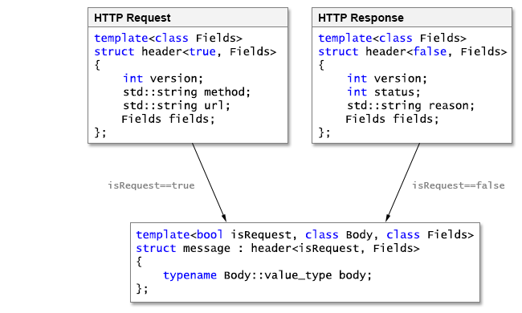

|


A HTTP message (referred to hereafter as "message") contains request or response specific attributes (contained in the "Start Line"), a series of zero or more name/value pairs (collectively termed "Fields"), and an optional series of octets called the message body which may be zero in length. The start line for a HTTP request includes a string called the method, a string called the URL, and a version number indicating HTTP/1.0 or HTTP/1.1. For a response, the start line contains an integer status code and a string called the reason phrase. Alternatively, a HTTP message can be viewed as two parts: a header, followed by a body. The HTTP protocol defines the client and server roles: clients send messages called requests and servers send back messages called responses.
![[Note]](../../images/note.png) |
Note |
|---|---|
The Reason-Phrase is obsolete as of rfc7230. |
In the serialized format of a HTTP message, the header is represented as
a series of text lines ending in CRLF ("\r\n").
The end of the header is indicated by a line containing only CRLF. Here are
examples of serialized HTTP request and response objects. In this example,
only the response has a body:
Table 1. Serialized HTTP Request and Response
|
HTTP Request |
HTTP Response |
|---|---|
GET / HTTP/1.1\r\n Accept: text/html\r\n Connection: keep-alive\r\n User-Agent: Beast\r\n \r\n |
200 OK HTTP/1.1\r\n Server: Beast\r\n Content-Length: 4\r\n \r\n **** |
The header
class template models the header for HTTP/1 and HTTP/2 messages. This class
template is a family of specializations, one for requests and one for responses,
depending on the isRequest
template value. The Fields
template type determines the type of associative container used to store
the field values. The provided basic_fields class template and
fields
type alias are typical choices for the Fields type, but advanced applications
may supply user defined types which meet the requirements. The message class template models the
header and optional body for HTTP/1 and HTTP/2 requests and responses. It
is derived from the header class template with the same
shared template parameters, and adds the body
data member. The message class template requires an additional template argument
type Body.
This type controls the container used to represent the body, if any, as well
as the algorithms needed to serialize and parse bodies of that type.
This illustration shows the declarations and members of the header and message class templates, as well
as the inheritance relationship:

There are three important template parameters in the message class:
template< bool isRequest, class Body, class Headers > class message;
isRequest:
Controls whether or not the message is a request or response. Depending
on the value, different data members will be present in the resulting
type.
Body:
determines both the kind of container used to represent the message body
and the algorithms used to parse and serialize it.
Headers:
determines the container used to represent the HTTP headers.
For notational convenience, the following template type aliases are provided:
template< class Body, class Headers = basic_headers<std::allocator<char>>> using request = message<true, Body, Headers>; template< class Body, class Headers = basic_headers<std::allocator<char>>> using response = message<false, Body, Headers>;
The message class template has different data members depending on whether it represents a request or response. These simplified declarations notionally illustrate the members of HTTP/1 messages:
template<class Body, class Headers> struct request { int version; // 10 for HTTP/1.0, 11 for HTTP/1.1 std::string method; std::string url; Headers headers; typename Body::value_type body; }; template<class Body, class Headers> struct response { int version; // 10 for HTTP/1.0, 11 for HTTP/1.1 int status; std::string reason; Headers headers; typename Body::value_type body; };
These statements set fields in request and response message objects:
request<string_body> req; req.version = 11; // HTTP/1.1 req.method = "GET"; req.url = "/index.html"; req.headers.insert("User-Agent", "Beast.HTTP"); req.body = ""; response<string_body> res; res.version = 10; // HTTP/1.0 res.status = 404; res.reason = "Not Found"; res.headers.insert("Server", "Beast.HTTP"); res.body = "The requested resource was not found.";